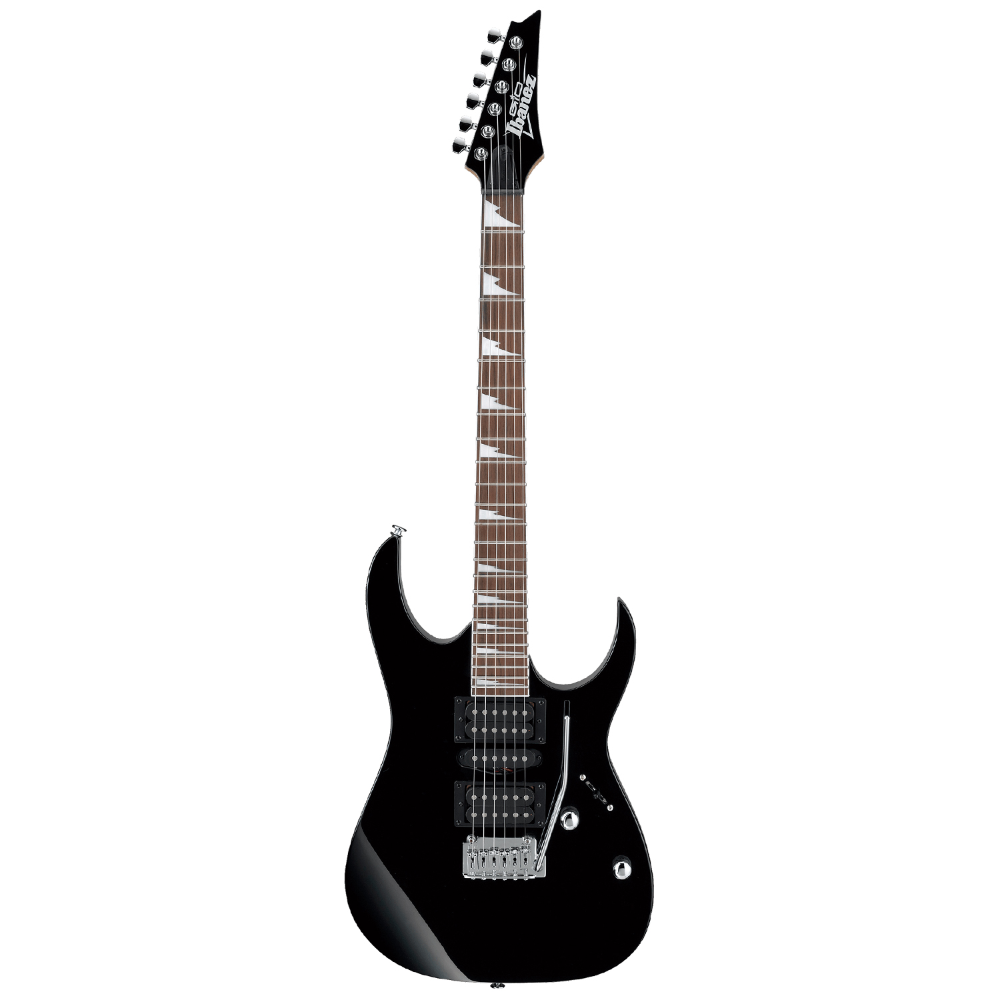

Produk Kami

Ibanez adalah merek gitar yang terkenal secara global, dikenal karena berbagai macam gitar listrik dan akustik yang dirancang untuk berbagai tingkat keahlian, dari pemula hingga profesional. Seri gitar mereka yang paling ikonik termasuk RG, S, dan JEM. RG, dengan bodi yang ramping dan leher yang cepat, adalah favorit di kalangan gitaris rock dan metal. Seri S, dengan bodi yang lebih tipis dan ringan, menawarkan ergonomi yang luar biasa dan fleksibilitas dalam bermain. Sedangkan seri JEM, yang dirancang oleh Steve Vai, menampilkan desain yang unik dengan "monkey grip" dan inlay berbentuk pohon anggur yang khas.
Selain gitar listrik, Ibanez juga memiliki seri gitar akustik dan akustik-elektrik seperti Artwood dan Talman. Seri Artwood terkenal karena fokus pada kualitas suara dan konstruksi tradisional, sementara Talman menggabungkan desain klasik dengan fitur-fitur modern, menjadikannya pilihan populer bagi pemain akustik-elektrik.
Ibanez menggunakan berbagai jenis material berkualitas tinggi dalam pembuatan gitar mereka. Leher gitar biasanya dibuat dari maple atau mahogany, memberikan stabilitas dan daya tahan. Bodi gitar dapat terbuat dari berbagai jenis kayu, termasuk basswood, alder, atau mahogany, tergantung pada model dan suara yang diinginkan. Beberapa gitar, terutama model high-end, menggunakan konstruksi neck-through-body atau set-neck untuk sustain yang lebih baik.
Dalam hal hardware dan elektronik, Ibanez sering dilengkapi dengan tremolo system yang memungkinkan pemain untuk melakukan teknik tremolo dengan presisi. Mereka menggunakan pickup dari produsen terkemuka seperti DiMarzio dan Seymour Duncan, selain juga membuat pickup mereka sendiri yang menawarkan berbagai suara dan karakteristik. Kontrol pada gitar Ibanez umumnya mencakup volume dan tone, serta switch pickup dengan konfigurasi yang berbeda-beda untuk fleksibilitas suara.
Desain gitar Ibanez mencakup berbagai warna dan finishing yang mencolok, mulai dari yang sederhana hingga yang mewah dengan inlay dan grafis yang artistik. Ibanez juga memiliki rangkaian produk dengan rentang harga yang luas, mulai dari model yang terjangkau untuk pemula hingga model high-end yang ditujukan bagi musisi profesional. Dengan berbagai pilihan dan kualitas yang konsisten, Ibanez terus menjadi salah satu merek gitar paling populer di dunia.
Selain gitar, Ibanez juga menawarkan aksesori dan peralatan lain yang mendukung para musisi, seperti case gitar untuk perlindungan, tuner untuk penyeteman yang akurat, serta berbagai pedal efek untuk memodifikasi suara. Dengan pendekatan yang komprehensif terhadap kebutuhan gitaris, Ibanez telah mendapatkan tempat khusus di hati para musisi dan terus berinovasi untuk memenuhi tuntutan pasar yang terus berkembang.
Layanan
Selamat datang di Ibanez Gitar! Kami adalah merek gitar terkemuka yang dikenal dengan kualitas, inovasi, dan desain yang menarik. Apapun gaya musik Anda—dari rock dan metal hingga jazz dan akustik—Ibanez memiliki gitar yang tepat untuk Anda. Kunjungi toko atau situs web resmi kami untuk menemukan berbagai pilihan gitar listrik, akustik, dan akustik-elektrik, serta aksesori dan perlengkapan terkait. Dengan beragam seri yang kami tawarkan, seperti RG, S, dan JEM untuk gitar listrik, serta Artwood dan Talman untuk gitar akustik, Anda pasti akan menemukan instrumen yang sesuai dengan kebutuhan dan preferensi Anda. Tim kami terdiri dari para ahli gitar yang siap membantu Anda memilih gitar yang tepat. Mereka akan memandu Anda melalui berbagai pilihan material, desain, hardware, dan elektronik, memastikan Anda mendapatkan gitar yang sesuai dengan gaya bermain dan anggaran Anda. Selain itu, Ibanez juga menawarkan berbagai layanan purna jual, termasuk garansi, perawatan, dan reparasi, untuk menjaga gitar Anda dalam kondisi terbaik. Kami juga menyediakan tutorial dan sumber daya edukatif untuk membantu Anda mengembangkan keterampilan bermain gitar Anda. Jadi, tunggu apa lagi? Kunjungi Ibanez Gitar sekarang dan temukan gitar yang akan menjadi sahabat musik Anda. Dengan Ibanez, Anda tidak hanya membeli gitar, Anda membeli pengalaman musik yang luar biasa!